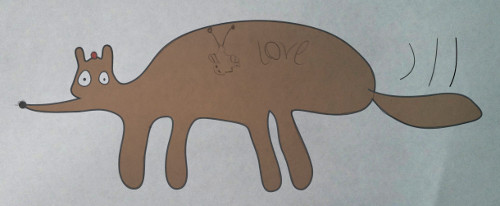

Kitti has a very long nose. A waggy tail. Bulging eyes to see in the dark. A bump on their head. And a big tummy.
Kitti is a system for keeping track of who paid for what and ensuring everything is fair (over time). No money changes hands between participants until they want to stop using Kitti.